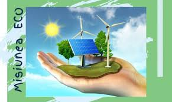

Încălzirea globală nu este un fenomen de neoprit. Prin acțiuni colective și individuale, putem reduce impactul asupra planetei.
Folosește transport ecologic – bicicletă, mers pe jos, transport public sau mașini electrice reduc emisiile de CO₂.
Reciclează și reutilizează – reciclarea reduce deșeurile și consumul de resurse naturale.
Economisește energie acasă – folosește becuri LED, deconectează electronicele nefolosite, izolează locuința eficient.
Treci la energie verde – panourile solare și turbinele eoliene reduc dependența de combustibili fosili.
Reduce consumul de carne – agricultura animală produce metan și afectează pădurile tropicale.
Cumpără produse locale și de sezon – transportul alimentelor pe distanțe mari generează poluare.
Plantează copaci – un copac poate absorbi până la 22 kg de CO₂ pe an.
Educație și conștientizare – învață și vorbește cu alții despre schimbările climatice.
Sprijină politici verzi – votează pentru lideri care susțin mediu și energie regenerabilă.
Reduce plasticul de unică folosință – produce gaze la ardere și poluează ecosistemele marine.

Trecerea la energie verde este una dintre cele mai importante măsuri.
Sursele regenerabile, precum energia solară sau eoliană, sunt curate, sigure și sustenabile pe termen lung.